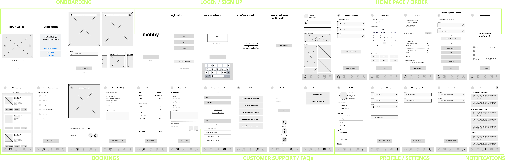
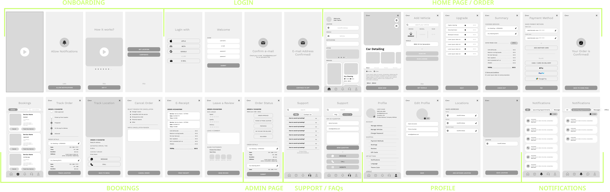
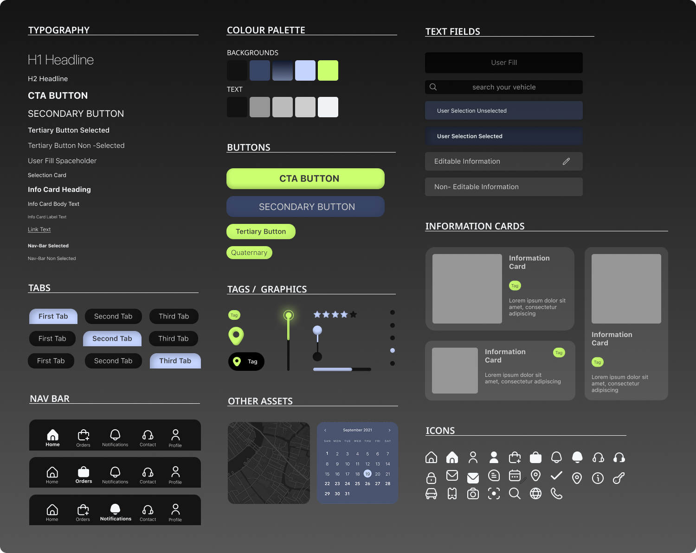
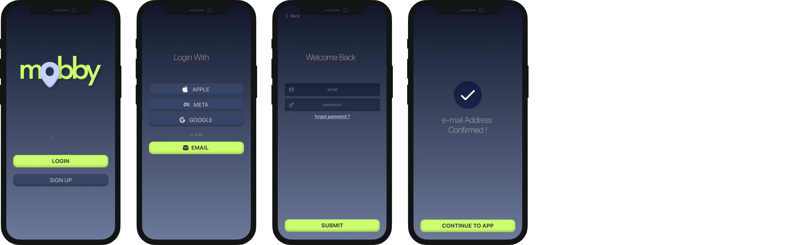
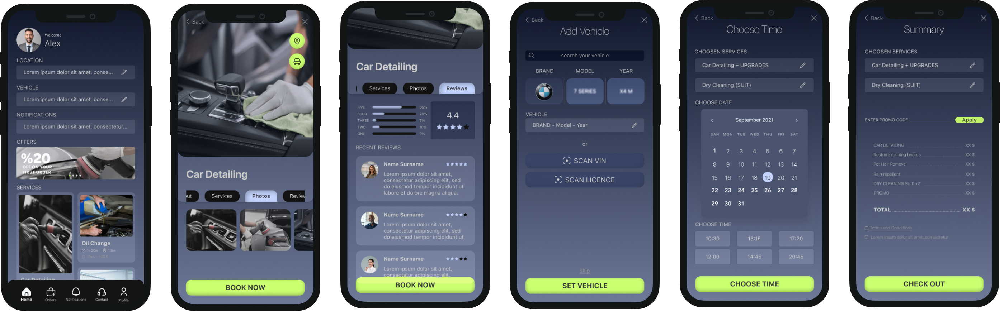
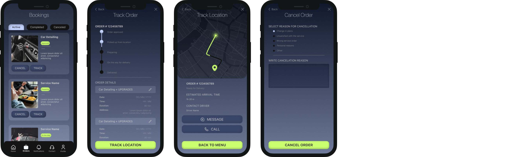
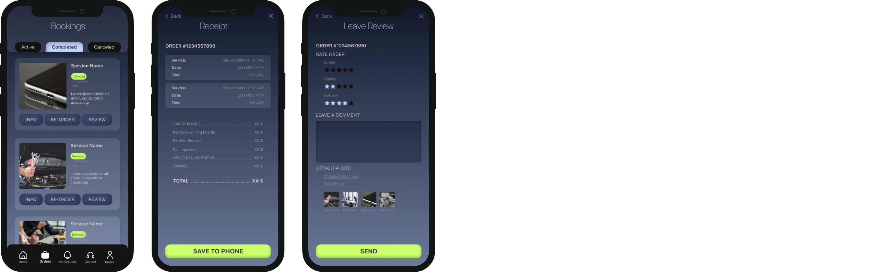
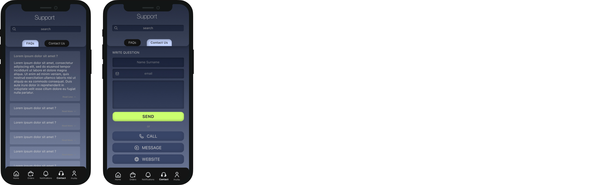
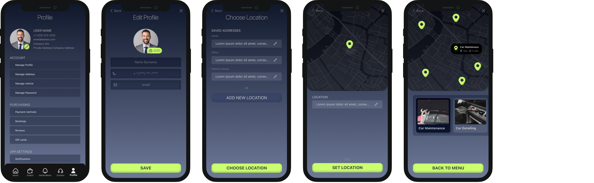
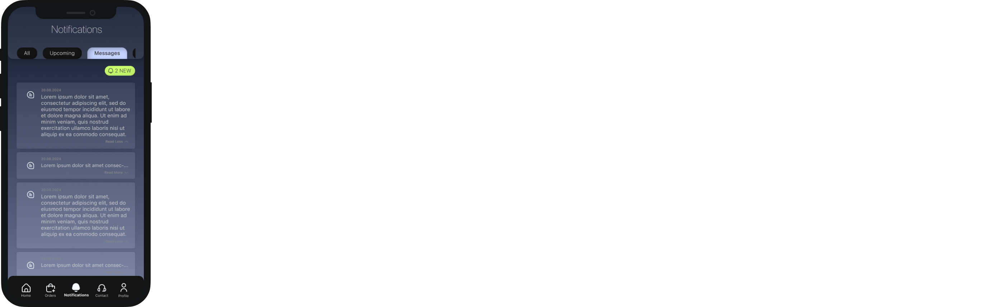

UI Design: Mobile App
As a UI/UX Design Intern, I was responsible for designing the user interface for a mobile application for a car wash and other automotive services. The company targeted mainly corporate clients. The user was expected to use it during work hours when the car could be collected from their office parking lot, driven to the service location, and returned afterwards. Thus the main identitity of the application was designed to reflect this target audience.
Process
Low Fidelity Wireframes
Low fidelity wireframes were created to explore different layout options and user flows. The basic structure and navigation were established.

High Fidelity Wireframes
Low fidelity wireframes were then refined into high-fidelity mockups. Different design options were explored and evaluated. Mobile applications with similar functionality were used as references.

Design Systems
A design system reflecting the brand identitywas established to ensure consistency across all UI elements.The color palette and typography were defined together with the head of design department. The sytem includes UI components,assets and variables. Some of the elements were collected from external figma template resources were used: The refernce to these are listed below.
Figma Flaticon - UI Icon Library
Figma Ready Map v1.0 - Map Template
Figma Calendar UI - Calendar Template

Project Mockup Frames
Finally, the completed mockups were assembled into a cohesive user interface. Additionally, user flow is added for better representation and communication between client stakeholders and the developers.
Login
The login/ sign up page allows users to access their account or create a new one. Several options for logging in/ signing up are provided for ease of use. The user can also reset their password if they forget it.

Home
Home screen includes the services, promotion notifications and location and vehicle information. The user can directly scroll through the available services, see their duration, price and a brief description just by looking at the home page. The service cards are selected for detailed description, serice reviews and detailed images. The user is then directed to the booking process by inputting their preferences and details.

Bookings: Active

Bookings: Completed

Support

Profile / Settings

Notifications
